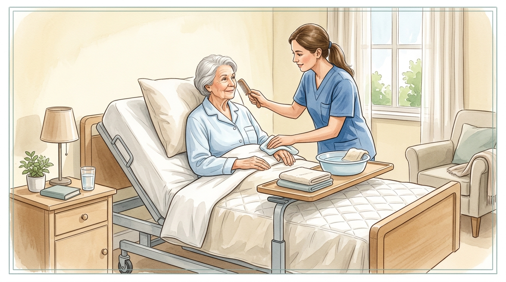

Higiene y Manejo Integral de la Incontinencia
La incontinencia urinaria y fecal es una de las condiciones con mayor impacto en la calidad de vida y autonomía de las personas mayores. Desde la Terapia Ocupacional, abordamos el cuidado íntimo mediante rutinas de micción programada, empapadores transpirables, bidés acoplables y preservación de la integridad de la piel.
1. Reentrenamiento y Rutinas de Aseo Programado
Técnica de micción pautada cada 2-3 horas y despeje total del itinerario hasta el cuarto de baño.
2. Higiene Íntima sin Fricción: El Bidé Acoplable
Lavado con agua tibia y jabón de pH neutro sin rozar la epidermis, previniendo la dermatitis asociada a incontinencia.
3. Protección de Cama y Asientos: Empapadores Transpirables
Protectores de 4 capas lavables que retienen el líquido sin generar sudoración ni calor excesivo.
4. Evacuación en Cama: Cuñas y Botellas Antiderrame
Dispositivos ergonómicos de fácil posicionamiento para evitar transferencias dolorosas en encamados.